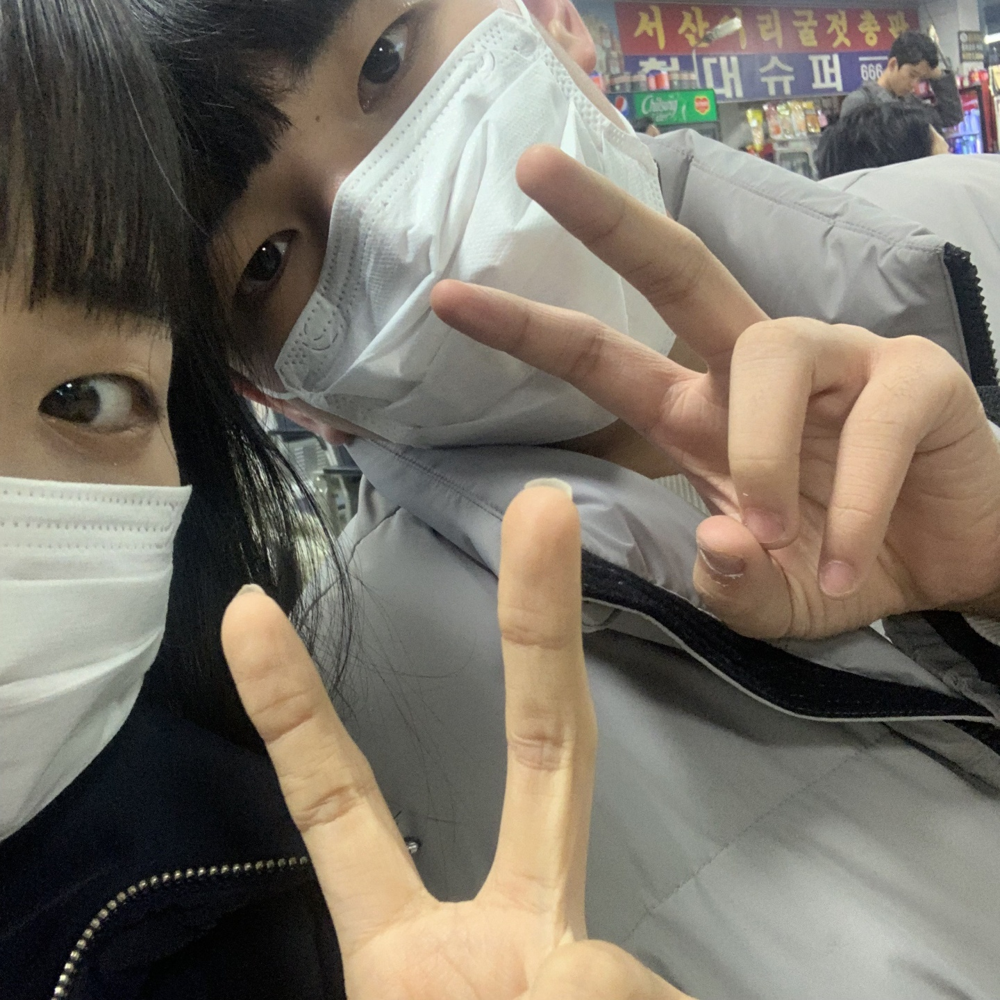

안녕 하은앙 ㅋㅋ 음 우선 내가 처음으로 선택한 우리의 추억은 바로바로바로바로 ㅎㅎ 우리가 처음 서산에서 데이트를 했던 날이야..
분명 내포에서 가까운 거리지만... 왜 이렇게 늦어져서야 왔는지 정말.. 아쉽고 후회된단말이야 내가 정말 어딜 잘 안다녀서..
내가 미안해ㅜㅜ 하은이는 항상 놀러가고 싶어했느데.. 내가 그런걸 잘 안해봐서 잘 못했어..
음 일단 하은이랑도 가고 싶은데 내가이날 일본에 갔다가 돌와와서 하은이를 만난 날이지? ㅋㅋㅋ
지금 생각해보면 참 쓸모없는 선물을 줘서 미안하게 생각해용.. 근데 내가 정말 센스가 없나봐..
아직도 잘은 못하지만 그래두 조금씩 잘 찾아보고 있구 아마도 우리가 결혼하고 나면 내가 연애할 때 보다 더 잘할 것 같아 ㅋㅋ 진화하는 남자친구 어때ㅋ
우선 이날 첫번째 서산인데 우리는 와서 점심인가 고기를 먹었던걸루 기억해 갈비였지 맛있었는뎁 ㅋㅋㅋ
그리구 호수 공원 좀 구경하다가 볼링장에 갔었지 증말 우린 항상 똑같은 것 같아.. 정말 충남 어딜가던 할게 없어..
이때만해도 내가 하은이 앞에서도 노래도 잘 안부르고 뭐가 그렇게 부끄럽다고 안했었는지..
지금 생각하면 참 후회하는 일이 많아 난 정말 좋은 남자친구였다고만 생각해왔는데 돌이켜보면 정말 할 줄 아는게 없더라..
말도 이쁘게 못해주고 해달라는것도 잘 안해주고 그런 못된 시절의 나랑 참고 만나준게 너무 고마워ㅎㅎ
지금은 그래도 하은이가 많이 편해지고 너무 잘해주고 싶은 사람이란걸 매일 느껴서 정말 좋아
이제와서 늦을 지도 모르지만 난 적어도 작년 내가 원광대에 처음 갔었을때
하은이에게 큰 상처를 주고 난 다음 하은이에게는 정말 잘하겠다는 다짐하에 지금까지 열심히 노력하고 있다고 생각해 하은이가 더 좋아졌고 말이야
그리고 나의 이런 다짐은 군대를 다녀와서도 마찬가지겠지 내가 하은이에게 믿음을 줄 수 있는 방법은 많지는 않지만
이렇게라도 마음을 전하는게 나중에 후회하지 않을거라 생각해 정말 사랑하고 고마워
하은이가 이걸 읽고 있을때는 내가 곁에는 없을지라도 항상 하은이를 생각할거니 너도 내생각을 하거라 ㅋㅋ 편지 많이 쓸게 전화도 많이하고 꼭 받아줘
읽기가 불편할 수 도 있지만 내가 아직 많이 배운게 아니라 이렇게 한걸 미안하지만 감안하고 봐줘 ㅎㅎ.. 다음엔 더 발전된 모습 보여줄게 !
